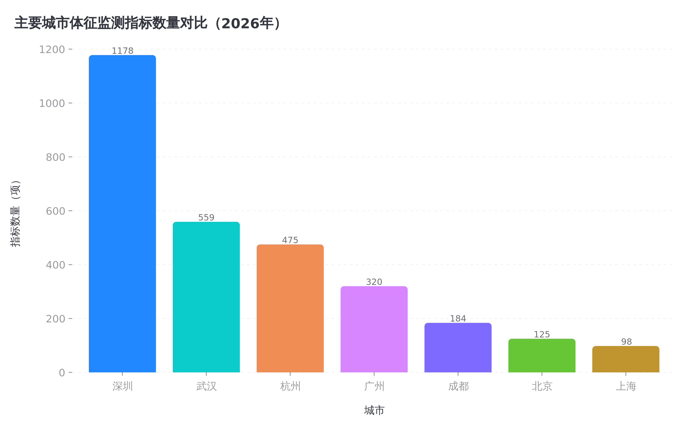
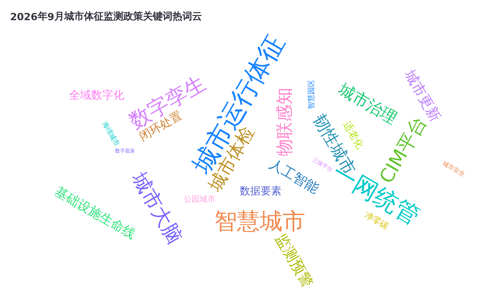
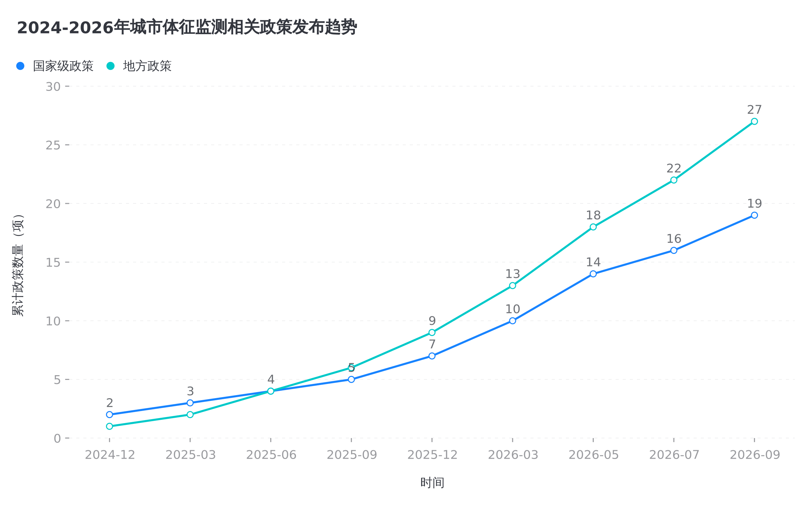
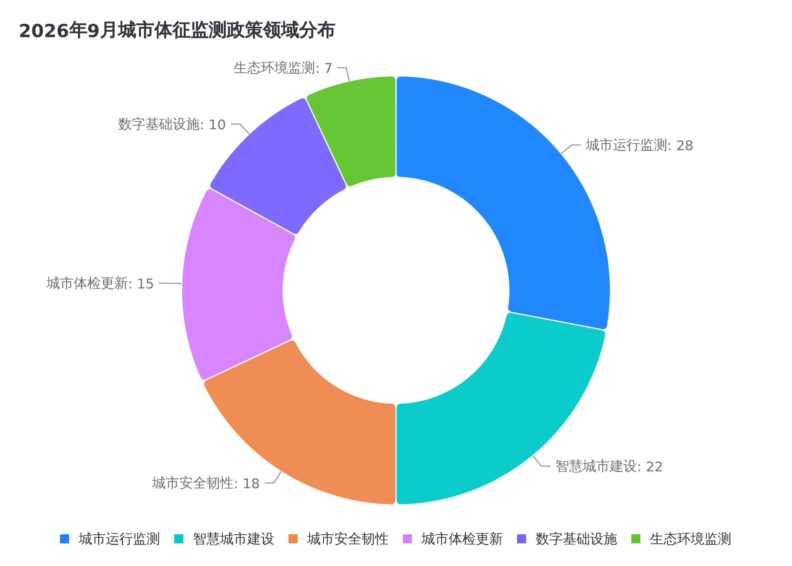

一、2026年9月政策发布时间线
本月国内城市体征监测与智慧城市领域政策密集发布，涵盖数字化绿色化协同转型、城市体检、城市生命线安全工程等多个维度。
二、国家级政策详细解读
2026年国家级政策密集出台，形成了从顶层设计到标准规范的完整政策体系，推动城市运行监测从"监测预警"向"体征评估+闭环治理"升级。
核心要求
- 推动构建"一委一办一平台"工作体系，完善统筹协调机制
- 深化"一网统管"建设，加快应用物联网、大数据、人工智能、5G等技术
- 推进城市信息模型（CIM）平台建设升级
- 搭建完善城市运管服务平台，探索建立基于智能中枢的多级贯通智能化平台
- 对城市运行管理服务状况进行实时监测、动态分析、统筹协调、指挥监督和综合评价
与前政策的区别
从"双化协同"（数字化绿色化协同）角度拓展城市运行监测，强调数智技术与绿色技术融合创新在城市运行管理中的应用，将城市运行监测纳入国家战略框架。
核心要求
- 城市体检以城市高质量发展为目标，通过建立指标体系，运用统计、大数据分析和社会调查等方法采集城市信息
- 查找群众急难愁盼问题，对城市人居环境质量、城市规划建设管理工作成效等进行定期分析、评估、监测和诊断
- 2026年部署地级及以上城市和县级市全面开展城市体检工作
- 加快实现住房、小区（社区）、街区、城区（城市）4个维度体检全覆盖
- 推动"先体检后更新、无体检不更新"
与前政策的区别
将城市体检从"大中城市专属"升级为"所有设市城市全覆盖"，体检维度从2个扩展到住房、小区、街区、城区4个，形成更完整的城市健康监测体系。
核心要求
- 到2027年底，数据赋能城市经济社会发展取得明显进展
- "高效处置一件事"覆盖城市运行重点事件
- 构建城市运行体征指标体系，建立数据赋能、分级协作、闭环落实的智慧高效治理机制
- 鼓励有条件的城市建设数字化城市综合运行和治理中心
- 推进城市运行、综合治理、交通管理、应急管理等系统互联接入
- 完善城市信息模型（CIM）平台
与前政策的区别
首次在国家层面明确提出"构建城市运行体征指标体系"，将城市运行监测从"监测预警"扩展到"体征指标体系+闭环治理"，形成监测、分析、决策、处置的完整闭环。
核心要求
- 推进城市全域数字化转型，建设城市信息模型（CIM）基础平台
- 打造集约统一、数据融合、高效协同的城市数字底座
- 完善CIM基础数据库和标准体系，丰富拓展"CIM+"应用场景
- 健全国家、省、城市三级城市运行管理服务平台体系
- 推动城市运行"一网统管"
- 推进房屋建筑和市政设施赋码，建设国家房屋建筑和市政设施基础信息库
与前政策的区别
国务院层面的城市更新五年规划，将城市数字化建设、CIM基础平台、城市运行管理服务平台体系纳入城市更新总体框架，明确"一网通办""一网统管"双轮驱动，形成"体检—更新—运行监测"的闭环体系。
核心要求
- 强化社会治理领域物联网服务供给，深化物联网技术应用
- 加强城市建设运营治理数字化建设，完善城市信息模型（CIM）平台
- 助力构建"数字孪生城市"
- 科学有序推动低空智能网联系统建设
- 支撑实现城市智能管控、风险预警、应急救援等功能
- 探索"方案+建设+运营"的应用模式
与前政策的区别
首次将"数字孪生城市"写入国家级行动方案，与CIM平台、低空智能网联系统并列，成为国家级政策文件中的重要表述。从物联网产业角度推动感知终端、网络通信、数据处理、安全等关键技术突破与城市治理场景结合。
三、国家标准与指标规范
2026年是城市运行管理服务平台标准体系建设的关键年份，GB/T 47678系列国家标准集中发布，为全国城市运管服平台建设提供统一技术规范。
3.1 GB/T 47678系列国家标准
《城市运行管理服务平台 标准体系》（GB/T 47678系列）于2026年5月25日发布，2026年7月1日实施，是城市运行监测领域最核心的国家标准体系。
已发布标准
标准体系
监测领域
| 标准号 | 标准名称 | 核心内容 | 来源链接 |
|---|---|---|---|
| GB/T 47678.1-2026 | 第1部分：术语和符号 | 界定城市运行管理服务平台中基础通用、运行监测、指挥协调、公众服务、综合评价的术语和符号 | 查看 → |
| GB/T 47678.2-2026 | 第2部分：通用技术 | 规定技术支撑、业务支撑、数据资源、基础设施、运行维护、日常管理等基础与共性技术要求 | 查看 → |
| GB/T 47678.3-2026 | 第3部分：网格 | 规范网格类型划分及标识码、网格数据和图示表达要求 | 查看 → |
| GB/T 47678.6-2026 | 第6部分：监测部件和事件 | 规范监测部件和事件的分类、标识码及空间和属性数据等内容 | 查看 → |
| GB/T 47678.8-2026 | 第8部分：信息采集 | 规定信息采集的组织方式、人员要求、采集要求、采集流程、采集设备和管理要求 | 查看 → |
| GB/T 47678.10-2026 | 第10部分：综合评价 | 围绕城市运行、城市管理、公众服务、工作效能四大维度，构建"一级大类、二级细分方向、三级可量化考核项"三层架构评价指标体系 | 查看 → |
💡 关键发现
GB/T 47678.10-2026《综合评价》标准是城市体征监测的核心评价规范，采用"城市运行、城市管理、公众服务、工作效能"四大维度的三层架构评价指标体系，为城市运行体征量化评估提供国家标准依据。
3.2 城市体检指标体系
住房城乡建设部建立城市体检基础指标体系，作为城市健康状况的"体检表"。
| 维度 | 二级分类 | 核心指标示例 | 基础指标数 |
|---|---|---|---|
| 住房 | 安全耐久、功能完备、绿色智能 | 结构安全隐患住宅数量、燃气安全隐患住宅数量、适老化改造需求数量 | 约15项 |
| 小区（社区） | 设施完善、环境宜居、管理健全 | 养老托育设施覆盖率、公园绿化活动场地服务半径覆盖率、物业管理覆盖率 | 约16项 |
| 街区 | 功能完善、整洁有序、特色活力 | 老旧街区更新数量、特色街区数量、商业街区活力指数 | 约14项 |
| 城区（城市） | 生态宜居、历史文化、产城融合、安全韧性、智慧高效 | 黑臭水体数量、绿色建筑占比、建筑施工安全监测覆盖率、城市运行监测指标 | 约16项 |
数据来源：住房城乡建设部《关于全面开展城市体检工作的指导意见》（建科〔2023〕75号），61项基础指标 [来源]
3.3 智慧城市评价国家标准
| 标准号 | 标准名称 | 发布/实施日期 | 指标体系 |
|---|---|---|---|
| GB/T 33356-2022 | 新型智慧城市评价指标 | 2022-10-14 / 2023-05-01 | 9项一级指标、29项二级指标、62项二级指标分项，涵盖惠民服务、精准治理、生态宜居等 |
| GB/T 44061-2024 | 智慧城市 城市运行指标体系 智能基础设施 | 2024-05-28 / 2024-12-01 | 确立城市智能基础设施运行指标体系总体框架，描述指标分类、指标项及维护与应用 |
四、地方政策与实践
各地方城市积极推进城市运行"一网统管"和城市体征指标体系建设，形成了各具特色的实践模式。
核心指标摘要
- 城市数字体征指标体系：科学设定市区融合的城市运行数字体征指标体系并实施动态调整
- 分级设置：各部门和单位按职责分类分级设置城市运行体征指标和相关预警阈值
- 三级体系：市、区、街道（乡镇）三级城市运行管理体系
- 七级应用：市、区、街道（乡镇）、社区、网格、小区、楼栋七级应用体系
- 6维度559项体征：城市基础、交通、环境、保障、安全、活力6个维度42类559项城市体征
主要要求
- 依托数字公共基础设施，健全城市运行管理平台
- 实现全域态势监测、智能风险预警、统一指挥调度、事件闭环处置
- 推动"三网融合"：一网统管、一网通办、一网通享
- 建立平时、急时双轨运行机制
核心指标摘要
- 八大维度体征：气象、环境、人口、供给、交通、安全、民生、舆情
- 持续完善城市运行体征指标体系，丰富公共区域视频、消防物联、水电气等多源数据
- 强化视觉中枢赋能交通管理、应急处置、网格治理等实战场景
- 推进市、区、街镇三级城运指挥调度视频系统建设
核心指标摘要
- 监测规模：50类监测对象、131个监测因子、184个监测指标；已上线城市体征指标475项
- 三级告警：设置三级告警阈值和处置流程，形成"重点监测+分级预警+闭环处置"
- 监测领域：供水保障、污水处理、内涝预警、桥梁超限、燃气压力异常等
- 6大领域：水设施河道、市容景观、城镇燃气、固废处置、市政设施、地铁运营期保护区
- 48类866个关键对象：特大桥梁、中长隧道等关键对象形成123个安全监测因子
核心指标摘要
- 1178项重点指标：高频更新城市运行重点指标1178项
- 数字孪生底座：夯实数字孪生底座，构建全域感知网络，汇聚多源异构城市数据
- CIM平台：依托CIM平台与实时仿真引擎，实现物理空间与数字空间实时映射、动态更新
- 城市智能中枢：构建大模型驱动的城市治理智能引擎
- 180万感知终端：新增物联感知终端180万个
- 50个数字孪生场景：新推出数字孪生应用场景50个、"城市+AI"应用场景100个
4.1 各城市体征指标体系对比

| 城市 | 平台名称 | 核心维度 | 指标/监测因子 | 特色亮点 |
|---|---|---|---|---|
| 上海 | 城市运行"一网统管" | 气象、环境、人口、供给、交通、安全、民生、舆情（8类） | 通用型+特色型数字体征体系 | 视觉中枢赋能、三级城运视频系统 |
| 武汉 | 城市运行"一网统管" | 城市基础、交通、环境、保障、安全、活力（6类） | 6维度42类559项体征 | 地方政府规章、七级应用体系、三网融合 |
| 杭州 | 城市运行"一网统管" | 供水、污水、内涝、桥梁、燃气等 | 50类对象/131因子/184指标/475项体征 | 三级告警阈值、五步工作法闭环处置 |
| 深圳 | 数字孪生先锋城市 | CIM+数字孪生+AI大模型 | 1178项高频更新重点指标 | 数字孪生底座、大模型驱动、180万感知终端 |
| 北京 | "一网统管""一网慧治" | 城市管理、交通、生态环境、水务等 | 125.2万台感知设施、5大类270余种 | "京通""京办""京智""京策"四京体系 |
| 广州 | "穗智管" | 人、企、气象、交通、政务服务、舆情 | 多领域运行体征数据融合 | PDCA循环治理、指标亮灯、数据穿透 |
| 成都 | 智慧蓉城 | 城市生命线、公共安全、生产安全、自然灾害 | 8大板块32项预警事件 | "1+1+3"功能体系、三级平台统一运行 |
五、国家标准化管理委员会（sac.gov.cn）相关内容
重点梳理国家标准化管理委员会官网发布的城市体征监测、智慧城市、城市治理相关国家标准与政策文件。
5.1 2026年9月发布标准
| 发布日期 | 标准/文件名称 | 标准号 | 核心内容摘要 | 来源链接 |
|---|---|---|---|---|
| 2026-09-10 | 海绵城市建设用雨水预处理设施 国家标准 | — | 规范城市建设用雨水处理设施评价，属于海绵城市建设领域 | 查看 → |
| 2026-09-08 | 公共卫生间适老化设施服务评价规范 | GB/T 48175—2026 | 围绕通行、如厕、盥洗、标识等全场景进行适老化设施服务评价；设置安全性、适用性、舒适性、智能化等一级指标 | 查看 → |
| 2026-09-08 | 社区食堂适老化设施服务评价规范 | GB/T 48176—2026 | 覆盖出入口、选餐、结账、就餐、回餐等全就餐流程，明确轮椅坡道、防滑地面、无障碍就餐位、全域监控等适老化配置要求 | 查看 → |
| 2026-09-07 | 人居环境气候舒适度评价 | GB/T 27963—2026 | 采用有效温度指数（ET）作为统一评价指标，综合日平均气温、相对湿度、风速、日照时数四类气象观测数据，划分为五个等级 | 查看 → |
| 2026-09-04 | 智慧城市运营模型中的人工智能应用 第2部分：原则与要素（国际标准立项） | ISO 37127-2 | 为智慧城市运营中的人工智能应用构建系统性治理框架，明确治理体系、实施路径、协同机制、成效评估等核心要素 | 查看 → |
| 2026-09-04 | 净零碳城市 第2部分：原则与要素（国际标准立项） | ISO 37115-2 | 聚焦能源、交通、建筑、工业、农业、林业、土地利用、循环经济等重点领域，为城市制定净零碳策略提供系统性原则和要素指引 | 查看 → |
5.2 2026年发布的重要相关标准
| 发布日期 | 标准名称 | 标准号 | 实施日期 | 核心内容 |
|---|---|---|---|---|
| 2026-08-19 | 城市公共设施管理 通用要求 | GB/T 32555—2026 | 2027-02-01 | 涵盖市政设施、公共服务设施、数字公共基础设施三大类，新增低空基础设施、社区服务设施、CIM、算力中心、城市感知终端等数字底座管理要求 |
| 2026-08-27 | 智慧园区建设与运维指南 | GB/T 47874—2026 | — | 构建智慧园区建设与运维总体框架，明确数字基础设施、支撑平台、智慧应用和运维管理体系 |
| 2026-05-25 | 城市运行管理服务平台系列标准 | GB/T 47678系列 | 2026-07-01 | 9项国家标准，覆盖术语、通用技术、网格、地理编码、管理部件、监测部件、数据、信息采集、综合评价 |
| 2026-02-12 | 公园城市建设评价指南 | GB/T 47111—2026 | — | 构建涵盖自然生态、空间形态、人居环境、生态赋能、城市治理5个方面及10项建设评价内容的公园城市建设评价框架 |
六、数据分析与趋势洞察
6.1 关键词热频分析
通过对2026年9月及近期发布的城市体征监测相关政策文件进行文本分析，提取高频关键词如下：

6.2 政策发布趋势
2024年以来，城市体征监测相关政策呈现加速发布态势，国家级政策与地方政策形成共振。

6.3 政策领域分布

6.4 核心趋势与变化
趋势一：城市运行体征指标体系成为核心概念
《深化智慧城市发展 推进全域数字化转型行动计划》首次在国家层面明确提出"构建城市运行体征指标体系"，标志着城市运行监测从"监测预警"升级为"体征评估+闭环治理"。武汉、上海、杭州等城市已建立各具特色的城市体征指标体系，指标数量从数百到上千不等。
趋势二：数字孪生城市从概念走向政策落地
《推动物联网产业创新发展行动方案》首次将"数字孪生城市"写入国家级行动方案，与CIM平台、低空智能网联系统并列。深圳明确提出建设"数字孪生先锋城市"，杭州、广州等城市也在加速推进数字孪生应用场景建设。
趋势三：城市体检与城市运行监测深度融合
2026年住建部部署所有设市城市全面开展城市体检，实现住房、小区、街区、城区四个维度全覆盖。城市体检与城市更新一体化推进，"先体检后更新、无体检不更新"成为共识，为城市运行监测提供数据基础和治理闭环。
趋势四：AI大模型赋能城市治理
深圳、成都等城市明确提出在城市治理中应用人工智能大模型，构建城市治理智能引擎，推动城市治理从经验驱动向数据驱动、从被动响应向主动预防转变。ISO 37127-2国际标准也聚焦智慧城市运营中的人工智能应用。
趋势五：国家标准体系趋于完善
GB/T 47678系列9项国家标准于2026年5月集中发布，覆盖城市运行管理服务平台从术语到评价的全链条。城市运行监测从各地探索走向标准化、规范化发展。